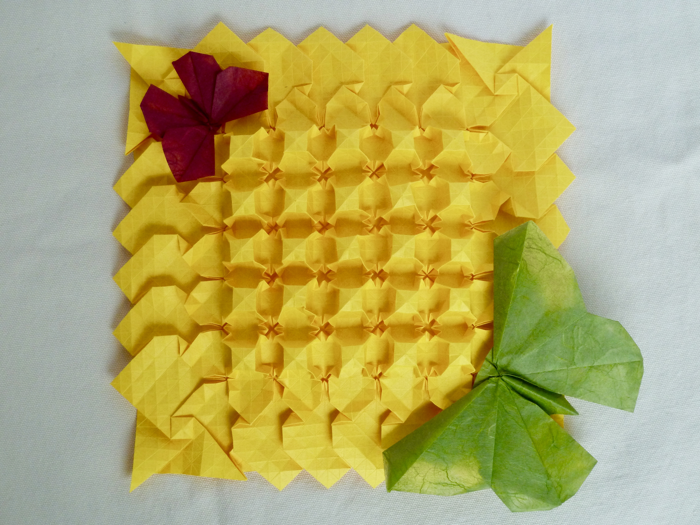
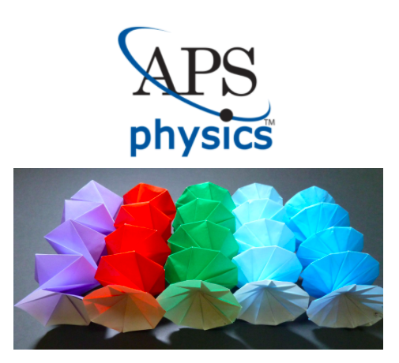

Origami
Sophie Usherwood
From a young age I have enjoyed origami, and I have explored this ancient tradition in three novel ways: in origami-inspired technology research, in community service, and as an artform.
Visit research publications .
Visit origami community service .
Visit origami art gallery .
Featured
Origami Sunflower Tessellation (
click here to learn more)

APS
Origami Spring Research
(
click here to learn more)

Fun Facts
Can you guess what type of origami I enjoy folding the most? Hint: look at the gallery.
Curious who my favorite origami artist is?
Click Me!
Curious about the first origami model I ever folded?
Click Me!
Click on the play button to hear the origami hummingbird sing.
Your browser does not support the HTML Audio element.
Curious what I folded to win the OrigamiUSA 2019 Competition?